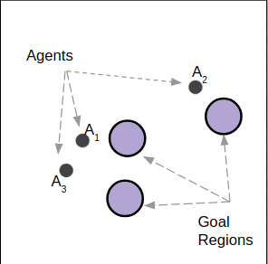
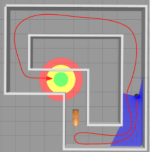
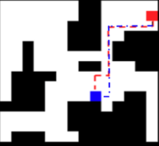
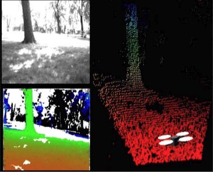
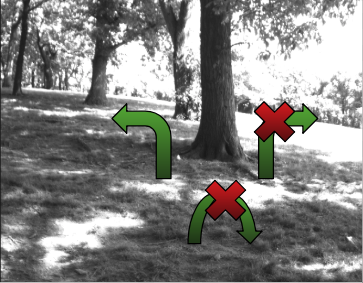
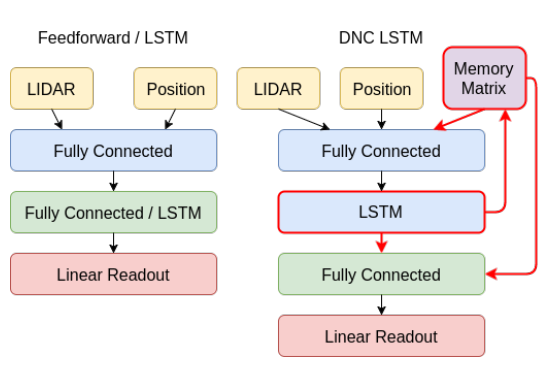

I am a second year PhD student in the Electrical and Systems Engineering Department at the University of Pennsylvania. I am advised by Professors Vijay Kumar and Alejandro Ribeiro at the GRASP lab. My research interests lie at the intersection of learning and decision making for robotics. These include improving upon existing policy optimization methodologies, neural network architectures and exploring new models for robust learning. Most recently I have been investigating reinforcement learning methods for teams of robots through parametrizations on graphs.
Before my PhD, I was pursuing a masters in Robotics also at the University of Pennsylvania where I was advised by Professors Daniel D. Lee and Vijay Kumar. During my masters, my research was focused on learning meaningful representations for robot navigation. I also spent some time working at the LAIR Lab at Carnegie Mellon University's Robotics Institute. At CMU, my research was focused on autonomous UAV flight through GPS denied cluttered outdoor environments such as forests.
I gave an invited talk on “Learning for Concurrent Assignment and Planning” at CalTech (03.2019).
I gave an invited talk on “Sufficient Model Learning” at Samsung Research America, NYC (01.2019).
|  |
Scalable Centralized Deep Multi-Agent Reinforcement Learning via Policy Gradients
Submitted to Neural Information Processing Systems (NIPS), 2018 A. Khan, C. Zhang, D.D. Lee, V. Kumar, A. Ribeiro |
|---|
|  |
Learning Sample-Efficient Target Reaching for Mobile Robots
2018 IEEE/RSJ International Conference on Intelligent Robots and Systems (IROS), 2018 A. Khan, V. Kumar, A. Ribeiro |
|---|
|  |
Memory Augmented Control Networks
International Conference on Learning Representations (ICLR), 2018 A. Khan, C. Zhang, N. Atanasov, K. Karydis, V. Kumar, D.D. Lee |
|---|
|  |
Multi Modal Pose Fusion for Monocular Flight with Unmanned Aerial Vehicles
2018 IEEE Aerospace Conference A. Khan, M. Hebert |
|---|
|  |
Learning Safe Recovery Trajectories with Deep Neural Networks for Unmanned Aerial Vehicles
2018 IEEE Aerospace Conference A. Khan, M. Hebert |
|---|
|  |
Neural Network Memory Architectures for Autonomous Robot Navigation
3rd Conference on Reinforcement Learning and Decision Making, 2017 S. Chen, N. Atanasov, A. Khan, K. Karydis, D.D. Lee, V. Kumar |
|---|
Workshop PublicationsEnd to End Memory Networks for Planning2017 IEEE/RSJ International Conference on Intelligent Robots and Systems (IROS), 2017 A. Khan, C. Zhang, N. Atanasov, K. Karydis, V. Kumar, Daniel D. Lee End-to-End Navigation in Unknown Environments using Neural Networks Workshop on Learning Perception, Control and Autonomous Flight: Safety, Memory and Efficiency at RSS 2017, Boston A. Khan, C. Zhang, N. Atanasov, K. Karydis, V. Kumar, Daniel D. Lee Robust Monocular Flight in Cluttered Outdoor Environments, S. Daftry, S. Zeng, A. Khan, D. Dey, N. Melik-Barkhudarov, J.A Bagnell, M. Hebert |
|---|